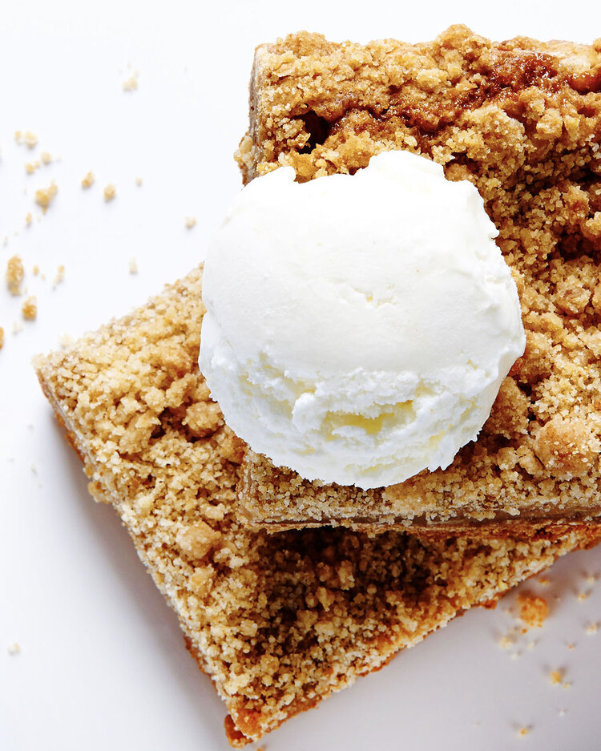

Apple Pie Bars

Dessert Recipe
Start humming The Star-Spangled Banner because these easy and delicious
Apple Pie Bars are going to have you pledging allegiance (to Bite Me
More). A fresh take on the American classic dessert, these Apple Pie Bars,
with their buttery graham crust, luscious apple toffee filling and crunchy
streusel, are perfectly portable, personal pies. How bout them apples?
Ingredients
Graham Crust
- 2 cups graham cracker crumbs
- ½ cup butter, melted
- ¼ cup brown sugar
- ¼ tsp ground cinnamon
- 1/8 tsp kosher salt
Apple Pie Filling
- 1 cup butter, melted
- 2 cups brown sugar
- 2 eggs
- 2 tsp vanilla extract
- 2 cups flour
- 1 tsp baking soda
- 1 tsp ground cinnamon
- ½ tsp kosher salt
- 1 cup SKOR Toffee Bits
- 2 cups Granny Smith apples, peeled and chopped
Streusel Topping
- ½ cup flour
- ¼ cup brown sugar
- ¼ cup sugar
- ¼ cup butter, melted
Steps
-
Preheat oven to 350ºF. Coat a 13x9-inch baking pan with non-stick
cooking spray. Line the pan with parchment paper.
-
In a medium bowl, combine graham cracker crumbs, melted butter, brown
sugar, cinnamon and salt. Press the mixture evenly and firmly into the
bottom of the prepared baking pan. Bake crust for 8 minutes, remove from
oven and set aside.
-
For the apple filling, in a large bowl, whisk melted butter and brown
sugar until combined. Whisk in eggs and vanilla extract until smooth.
Add flour, baking soda, cinnamon, salt, SKOR bits and chopped apples.
Stir just until flour has disappeared. Spread over baked graham crust.
-
For the streusel topping, in a medium bowl combine flour, brown sugar,
sugar and melted butter until streusel is crumbly. Sprinkle streusel
evenly overtop apple brownies. Bake for 40-45 minutes until topping is
golden brown. Remove from oven and let cool completely. Once cool,
refrigerate for easier cutting.